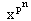
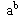
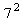
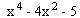

Algebra 1
sept. '97.
asistent: Bakic, smer: N, V
1. Neka je C polje kompleksnih brojeva i p prost broj.
a) Pokazati da je P = {x Î C ½($ n Î N) = 1} grupa u odnosu na mnozenje.
b) Pokazati da je Pn = {x Î C
½ =
1} podgrupa grupe P.
=
1} podgrupa grupe P.
c) Pokazati da ako je H podgrupa grupe P, onda postoji n Î N takvo da je H = Pn.
2. Neka su a, b Î N i a, b > 1. Pokazati da b ½ j (- 1).
3. Neka je grupa G reda ×5×3 u kojoj postoji element reda 49.
a) Dokazati da ona nije prosta.
b) Pokazati da postoji element reda  ×5.
×5.
4. Neka je K korensko polje polinoma
i K1 korensko polje minimalnog polinoma elementa
 + i.
+ i.
a) Odrediti K, K1, [K : Q], [K1 : Q].
b) Da li je K = K1? Odgovor obrazloziti.